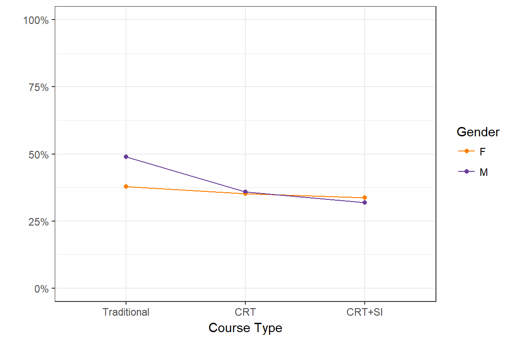
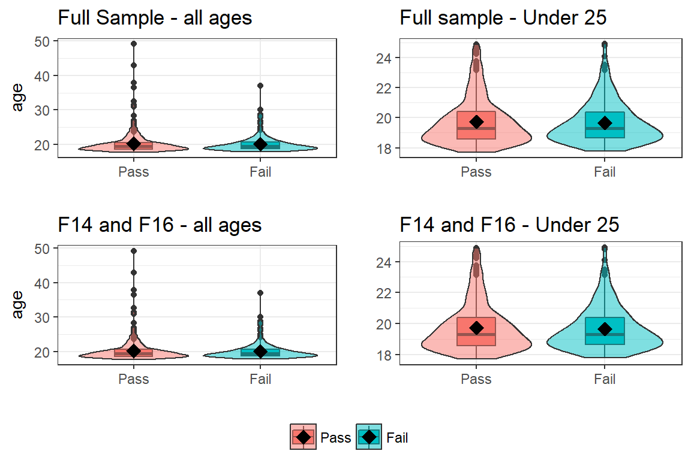
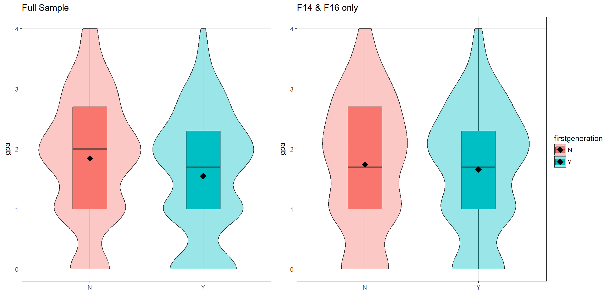
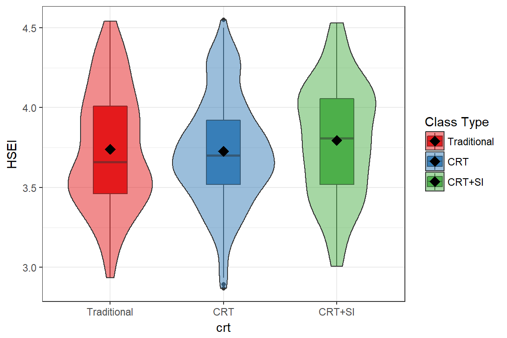

Purpose
This report examines the effect of the course redesign for a single instructor over two years.
- Student and class level characteristics are used as covariates.
- Univariate descriptions for these characteristics can be found in the Exploratory analysis document (Phase 1b.)
- Each predictor is compared to the intervention condition ( CRT vs Traditional), and to the outcomes (GPA and receipt of a repeatable grade.)
- Comparisons are made on two groups
- Traditional class (F14) vs. all other CRT cohorts (F15, S16, F16)
- F14 vs. F16 only
Analysis Plan
- Bivariate associations of covariate with outcome, and with CRT condition.
- Model building - Start with variables that were shown to be bivariately associated with either intervention or outcome, build a multivariable statistical model to assess the effect of the CRT on student performance.
- Supervised machine learning to build a Decision tree for the binary outcome of passing CHEM 111.
Outcome measurements
1. GPA
Since GPA is being treated as a continuous variable, distributions of GPA are displayed using boxplots with overlaid violin plots. The diamonds represent the average or mean value for that group. Two-sample T-tests and ANOVA tests are used to compare the average GPA across levels of the covariate of interest.
2. Receipt of a repeatable grade
We also dichotomize the grade a student received and create an indicator for whether or not the student received a repeatable grade (D, F, W, WU) for this analysis. This is also called the failure rate in some places in this report.
Where the sample size is large enough, \(\chi^{2}\) tests for equal proportions across two / and multiple groups are conducted, otherwise Fishers Exact Tests are used. Any comparison where a zero cell occurs (a combination of factors that does not exist in the data), no statistical test is conducted.
CRT vs. Student Performance
We examine four semesters of data from a single instructor. Three quarters of the data come from the redesigned courses (F15, S16, F16), colored in blue on most plots, and are compared to the last traditional course offering in F14, colored in red on most plots.
| term_idx | crt | N | dfw | dfw_rate | classgpa |
|---|---|---|---|---|---|
| F14 | Traditional | 154 | 69 | 0.45 | 1.53 |
| F15 | crt | 154 | 55 | 0.36 | 1.78 |
| S16 | crt | 163 | 64 | 0.39 | 1.65 |
| F16 | crt | 152 | 52 | 0.34 | 1.89 |
GPA
The overall distribution of gpa for the crt courses has shifted in the positive direction compared to the traditional courses. The mean for Fall 15 and F16 are higher than F14, with S16 closer to F14 than the other redesigned terms.

There is a significant improvement in average GPA in the CRT sections compared to traditional (p=.017).
##
## Welch Two Sample t-test
##
## data: df$gpa by df[, col.var]
## t = -2.393, df = 244.28, p-value = 0.01747
## alternative hypothesis: true difference in means is not equal to 0
## 95 percent confidence interval:
## -0.43809097 -0.04250256
## sample estimates:
## mean in group Traditional mean in group crt
## 1.529221 1.769518There is also a significant improvement in average GPA in F16 compared to F14 (p=.003).
##
## Welch Two Sample t-test
##
## data: df$gpa by df[, col.var]
## t = -2.9944, df = 298.38, p-value = 0.00298
## alternative hypothesis: true difference in means is not equal to 0
## 95 percent confidence interval:
## -0.5910981 -0.1222724
## sample estimates:
## mean in group Traditional mean in group crt
## 1.529221 1.885906DWF rate

The proportion of repeatable grades does not differ significantly across semesters (p=.10)
##
## Pearson's Chi-squared test with Yates' continuity correction
##
## data: ew$repeat_grade and ew$crt
## X-squared = 2.587, df = 1, p-value = 0.1077The failure rate in F16 is lower than the failure rate in F14, but only marginally so (p=.096)
##
## Pearson's Chi-squared test with Yates' continuity correction
##
## data: f146$repeat_grade and f146$crt
## X-squared = 2.7706, df = 1, p-value = 0.09601Student Characteristics
Gender
CRT vs. Traditional
There is no statistical difference in the proportion of females enrolled in CHEM 111 across the last for semesters.
| gender | F14 | F15 | S16 | F16 |
|---|---|---|---|---|
| F | 66 (42.9%) | 63 (40.9%) | 85 (52.1%) | 77 (50.7%) |
| M | 88 (57.1%) | 91 (59.1%) | 78 (47.9%) | 75 (49.3%) |

##
## Pearson's Chi-squared test
##
## data: table(ew$gender, ew$term_idx)
## X-squared = 5.888, df = 3, p-value = 0.1172The %Female in F16 (50.7%) is also not statistically significantly different from the % Female in F14 (42.9%).
##
## Welch Two Sample t-test
##
## data: (gender == "F") by term_idx
## t = -1.3671, df = 303.83, p-value = 0.1726
## alternative hypothesis: true difference in means is not equal to 0
## 95 percent confidence interval:
## -0.19029273 0.03427769
## sample estimates:
## mean in group F14 mean in group F16
## 0.4285714 0.5065789Performance - GPA
No statistical difference in GPA between males and females.
Full Sample
| gender | mean | sd |
|---|---|---|
| F | 1.70 | 0.96 |
| M | 1.71 | 1.10 |

##
## Welch Two Sample t-test
##
## data: df$gpa by df[, col.var]
## t = -0.14619, df = 607.56, p-value = 0.8838
## alternative hypothesis: true difference in means is not equal to 0
## 95 percent confidence interval:
## -0.1755966 0.1512652
## sample estimates:
## mean in group F mean in group M
## 1.702431 1.714596F14 & F16 only
| gender | mean | sd |
|---|---|---|
| F | 1.73 | 1.02 |
| M | 1.69 | 1.08 |

##
## Welch Two Sample t-test
##
## data: df$gpa by df[, col.var]
## t = 0.32211, df = 300.28, p-value = 0.7476
## alternative hypothesis: true difference in means is not equal to 0
## 95 percent confidence interval:
## -0.1988806 0.2767303
## sample estimates:
## mean in group F mean in group M
## 1.725175 1.686250Performance - DWF rate
There is no difference in dwf rate between males and females.
Full Sample
| repeat_grade | F | M |
|---|---|---|
| 0 | 186 (63.9%) | 198 (59.6%) |
| 1 | 105 (36.1%) | 134 (40.4%) |
##
## Pearson's Chi-squared test with Yates' continuity correction
##
## data: ew$repeat_grade and ew$gender
## X-squared = 1.0267, df = 1, p-value = 0.3109F14 & F16 only
| repeat_grade | F | M |
|---|---|---|
| 0 | 92 (64.3%) | 94 (57.7%) |
| 1 | 51 (35.7%) | 69 (42.3%) |
##
## Pearson's Chi-squared test with Yates' continuity correction
##
## data: f146$repeat_grade and f146$gender
## X-squared = 1.1545, df = 1, p-value = 0.2826Age
CRT vs. Traditional
Full Sample Students are significantly older on average in the traditional group compared to the CRT group, although there are more higher end outliers in the CRT group.
| crt | mean | sd |
|---|---|---|
| Traditional | 20.72 | 3.37 |
| crt | 20.04 | 2.72 |

##
## Welch Two Sample t-test
##
## data: df[, var] by df[, group]
## t = 2.2872, df = 222.09, p-value = 0.02313
## alternative hypothesis: true difference in means is not equal to 0
## 95 percent confidence interval:
## 0.09480549 1.27554375
## sample estimates:
## mean in group Traditional mean in group crt
## 20.72238 20.03721F14 & F16 only The average age in F14 is 20.7, which on average is significantly higher than the average age in F16 (19.9).
| crt | mean | sd |
|---|---|---|
| Traditional | 20.72 | 3.37 |
| crt | 19.89 | 2.61 |

##
## Welch Two Sample t-test
##
## data: df[, var] by df[, group]
## t = 2.4214, df = 287.4, p-value = 0.01608
## alternative hypothesis: true difference in means is not equal to 0
## 95 percent confidence interval:
## 0.1560667 1.5116915
## sample estimates:
## mean in group Traditional mean in group crt
## 20.72238 19.88850Performance - GPA
GPA and Age have a complex relationship. It is not quite linear, especially in the older age range. 

Excluding outliers in the oldest 5% (age > 25), we get closer to a more linear relationship. Subsequent analysis may want to consider excluding these older students, or analyzing them separately. Or dichotomizing age.


Performance - DWF rate [[NOT DONE YET]]
Full Sample
F14 & F16 only
Race / Ethnicity
The demographic shift across all chem classes is displayed in the Exploratory Analysis document. How does this compare to the campus-wide shift?
| race_code | F14 | F15 | S16 | F16 |
|---|---|---|---|---|
| Asian | 14 (9.1%) | 9 (5.8%) | 12 (7.4%) | 9 (5.9%) |
| Black | 6 (3.9%) | 6 (3.9%) | 3 (1.8%) | 2 (1.3%) |
| HL | 38 (24.7%) | 57 (37%) | 77 (47.2%) | 58 (38.2%) |
| Mult | 7 (4.5%) | 8 (5.2%) | 3 (1.8%) | 11 (7.2%) |
| Unk | 22 (14.3%) | 10 (6.5%) | 12 (7.4%) | 13 (8.6%) |
| White | 67 (43.5%) | 63 (40.9%) | 54 (33.1%) | 58 (38.2%) |
| AIAN | NA | 1 (0.6%) | 2 (1.2%) | NA |
| NHOPI | NA | NA | NA | 1 (0.7%) |
There are too many ethnicities with low sample sizes to compare statistically. Here we just look at two smaller groupings of race/ethnicity.
Underrepresented Minority (URM)
- Non-URM: Asian, NHOPI, White
- URM: Black, HL
- UNK: Mult, Unk
CRT vs. Traditional
Full Sample The distribution of URM across the past four terms has changed significantly.
| urm_status | F14 | F15 | S16 | F16 |
|---|---|---|---|---|
| Non-URM | 81 (52.6%) | 72 (46.8%) | 66 (40.5%) | 68 (44.7%) |
| Unknown | 29 (18.8%) | 18 (11.7%) | 15 (9.2%) | 24 (15.8%) |
| URM | 44 (28.6%) | 64 (41.6%) | 82 (50.3%) | 60 (39.5%) |

##
## Pearson's Chi-squared test
##
## data: table(ew$urm_status, ew$term_idx)
## X-squared = 18.282, df = 6, p-value = 0.005566F14 & F16 only No statistical difference in the distribution of proportions between years.
| urm_status | F14 | F16 |
|---|---|---|
| Non-URM | 81 (52.6%) | 68 (44.7%) |
| Unknown | 29 (18.8%) | 24 (15.8%) |
| URM | 44 (28.6%) | 60 (39.5%) |
##
## Pearson's Chi-squared test
##
## data: table(f146$urm_status, f146$term_idx)
## X-squared = 4.0546, df = 2, p-value = 0.1317Performance - GPA
Full Sample URM students have significantly lower GPA (.38 lower) compared to non-URM students. The GPA for students with unknown URM status have marginally lower (.23) GPA compared to non-URM students.
| urm_status | mean | sd |
|---|---|---|
| Non-URM | 1.90 | 1.09 |
| Unknown | 1.67 | 1.05 |
| URM | 1.51 | 0.92 |

##
## Call:
## lm(formula = df$gpa ~ df[, col.var])
##
## Residuals:
## Min 1Q Median 3Q Max
## -1.8961 -0.6271 0.1039 0.7914 2.3333
##
## Coefficients:
## Estimate Std. Error t value Pr(>|t|)
## (Intercept) 1.89609 0.06079 31.193 < 2e-16 ***
## df[, col.var]Unknown -0.22942 0.12671 -1.811 0.0707 .
## df[, col.var]URM -0.38751 0.08907 -4.351 1.59e-05 ***
## ---
## Signif. codes: 0 '***' 0.001 '**' 0.01 '*' 0.05 '.' 0.1 ' ' 1
##
## Residual standard error: 1.019 on 607 degrees of freedom
## (13 observations deleted due to missingness)
## Multiple R-squared: 0.0305, Adjusted R-squared: 0.02731
## F-statistic: 9.548 on 2 and 607 DF, p-value: 8.263e-05F14 & F16 only URM students have marginally lower GPA (.23 lower) on average compared to non-URM students. The GPA for students with unknown URM status is not different than the average GPA for non-URM students.
| urm_status | mean | sd |
|---|---|---|
| Non-URM | 1.83 | 1.13 |
| Unknown | 1.58 | 1.10 |
| URM | 1.60 | 0.89 |

##
## Call:
## lm(formula = df$gpa ~ df[, col.var])
##
## Residuals:
## Min 1Q Median 3Q Max
## -1.8260 -0.5961 0.1170 0.7170 2.4170
##
## Coefficients:
## Estimate Std. Error t value Pr(>|t|)
## (Intercept) 1.82603 0.08683 21.029 <2e-16 ***
## df[, col.var]Unknown -0.24301 0.16826 -1.444 0.1497
## df[, col.var]URM -0.22987 0.13463 -1.707 0.0888 .
## ---
## Signif. codes: 0 '***' 0.001 '**' 0.01 '*' 0.05 '.' 0.1 ' ' 1
##
## Residual standard error: 1.049 on 300 degrees of freedom
## (3 observations deleted due to missingness)
## Multiple R-squared: 0.01244, Adjusted R-squared: 0.005854
## F-statistic: 1.889 on 2 and 300 DF, p-value: 0.153Performance - DWF rate
Full Sample There is a statistical difference in DWF rate by URM status in the full cohort.
| repeat_grade | Non-URM | Unknown | URM |
|---|---|---|---|
| 0 | 197 (68.6%) | 54 (62.8%) | 133 (53.2%) |
| 1 | 90 (31.4%) | 32 (37.2%) | 117 (46.8%) |
##
## Pearson's Chi-squared test
##
## data: ew$repeat_grade and ew$urm_status
## X-squared = 13.529, df = 2, p-value = 0.001154F14 & F16 only There is no difference in dwf rate by URM status comparing F14 to F16 only.
| repeat_grade | Non-URM | Unknown | URM |
|---|---|---|---|
| 0 | 97 (65.1%) | 31 (58.5%) | 58 (55.8%) |
| 1 | 52 (34.9%) | 22 (41.5%) | 46 (44.2%) |
##
## Pearson's Chi-squared test
##
## data: f146$repeat_grade and f146$urm_status
## X-squared = 2.3789, df = 2, p-value = 0.3044Students of Color (SOC)
- Non-SOC= White
- SOC = AIAN, Asian, Black, HL, NHOPI
- Multiple/Mixed = Multi, Unk
CRT vs. Traditional
Full Sample The distribution of SOC across the past four terms has changed significantly (p=.01)
| soc | F14 | F15 | S16 | F16 |
|---|---|---|---|---|
| Non-SOC | 67 (43.5%) | 63 (40.9%) | 54 (33.1%) | 58 (38.2%) |
| SOC | 58 (37.7%) | 73 (47.4%) | 94 (57.7%) | 70 (46.1%) |
| Multiple/Mixed | 29 (18.8%) | 18 (11.7%) | 15 (9.2%) | 24 (15.8%) |

##
## Pearson's Chi-squared test
##
## data: table(ew$soc, ew$term_idx)
## X-squared = 15.445, df = 6, p-value = 0.01707F14 & F16 only No statistical difference in the distribution of proportions between F14 & F16.
| soc | F14 | F16 |
|---|---|---|
| Non-SOC | 67 (43.5%) | 58 (38.2%) |
| SOC | 58 (37.7%) | 70 (46.1%) |
| Multiple/Mixed | 29 (18.8%) | 24 (15.8%) |
##
## Pearson's Chi-squared test
##
## data: table(f146$soc, f146$term_idx)
## X-squared = 2.2317, df = 2, p-value = 0.3276Performance - GPA
Full Sample
Non-SOC students have a significantly higher GPA compared to students of color (.39 higher),and students identifying as Multiple/Mixed ethnities (.27 higher).
| soc | mean | sd |
|---|---|---|
| Non-SOC | 1.93 | 1.06 |
| SOC | 1.54 | 0.97 |
| Multiple/Mixed | 1.67 | 1.05 |

##
## Call:
## lm(formula = df$gpa ~ df[, col.var])
##
## Residuals:
## Min 1Q Median 3Q Max
## -1.93291 -0.53737 0.06709 0.76263 2.46263
##
## Coefficients:
## Estimate Std. Error t value Pr(>|t|)
## (Intercept) 1.93291 0.06615 29.220 < 2e-16 ***
## df[, col.var]SOC -0.39554 0.08924 -4.432 1.11e-05 ***
## df[, col.var]Multiple/Mixed -0.26624 0.12932 -2.059 0.0399 *
## ---
## Signif. codes: 0 '***' 0.001 '**' 0.01 '*' 0.05 '.' 0.1 ' ' 1
##
## Residual standard error: 1.018 on 607 degrees of freedom
## (13 observations deleted due to missingness)
## Multiple R-squared: 0.03161, Adjusted R-squared: 0.02841
## F-statistic: 9.905 on 2 and 607 DF, p-value: 5.846e-05F14 & F16 only Only comparing F14 and F16, non-SOC students have a significantly higher GPA compared to students of color (.28 higher), and marginally higher than those from Multiple/Mixed ethnicities (.29 higher).
| soc | mean | sd |
|---|---|---|
| Non-SOC | 1.87 | 1.13 |
| SOC | 1.59 | 0.93 |
| Multiple/Mixed | 1.58 | 1.10 |

##
## Call:
## lm(formula = df$gpa ~ df[, col.var])
##
## Residuals:
## Min 1Q Median 3Q Max
## -1.8724 -0.5929 0.1170 0.7170 2.4170
##
## Coefficients:
## Estimate Std. Error t value Pr(>|t|)
## (Intercept) 1.87236 0.09436 19.842 <2e-16 ***
## df[, col.var]SOC -0.27944 0.13240 -2.111 0.0356 *
## df[, col.var]Multiple/Mixed -0.28934 0.17196 -1.683 0.0935 .
## ---
## Signif. codes: 0 '***' 0.001 '**' 0.01 '*' 0.05 '.' 0.1 ' ' 1
##
## Residual standard error: 1.047 on 300 degrees of freedom
## (3 observations deleted due to missingness)
## Multiple R-squared: 0.01743, Adjusted R-squared: 0.01088
## F-statistic: 2.661 on 2 and 300 DF, p-value: 0.07152Performance - DWF rate
Full Sample There is strong statistical difference in DWF rate by SOC status in the full cohort.
| repeat_grade | Non-SOC | SOC | Multiple/Mid |
|---|---|---|---|
| 0 | 172 (71.1%) | 158 (53.6%) | 54 (62.8%) |
| 1 | 70 (28.9%) | 137 (46.4%) | 32 (37.2%) |
##
## Pearson's Chi-squared test
##
## data: ew$repeat_grade and ew$soc
## X-squared = 17.304, df = 2, p-value = 0.0001748F14 & F16 only There is a marginal difference in dwf rate by SOC status when looking at F14 and F16 only.
| repeat_grade | Non-SOC | SOC | Multiple/Mid |
|---|---|---|---|
| 0 | 85 (68%) | 70 (54.7%) | 31 (58.5%) |
| 1 | 40 (32%) | 58 (45.3%) | 22 (41.5%) |
##
## Pearson's Chi-squared test
##
## data: f146$repeat_grade and f146$soc
## X-squared = 4.8433, df = 2, p-value = 0.08877Student Groups
EOP
The number of EOP students is too small to make accurate comparisons.
CRT vs. Traditional
Full Sample The distribution of EOP student status has not changed significantly.
| eop | F14 | F15 | S16 | F16 |
|---|---|---|---|---|
| Non-EOP | 148 (96.1%) | 142 (92.2%) | 154 (94.5%) | 148 (97.4%) |
| EOP | 6 (3.9%) | 12 (7.8%) | 9 (5.5%) | 4 (2.6%) |
##
## Pearson's Chi-squared test
##
## data: table(ew$eop, ew$term_idx)
## X-squared = 4.8324, df = 3, p-value = 0.1845Performance - GPA
Full Sample There is no significant difference in average GPA for students in EOP compared to non-EOP students.
| eop | mean | sd |
|---|---|---|
| Non-EOP | 1.72 | 1.03 |
| EOP | 1.57 | 1.06 |

##
## Welch Two Sample t-test
##
## data: df$gpa by df[, col.var]
## t = 0.73174, df = 30.732, p-value = 0.4699
## alternative hypothesis: true difference in means is not equal to 0
## 95 percent confidence interval:
## -0.2626311 0.5563696
## sample estimates:
## mean in group Non-EOP mean in group EOP
## 1.715835 1.568966F14 & F16 only EOP students did significantly better compared to non-EOP students when looking at the F14 and F16 cohorts only.
| eop | mean | sd |
|---|---|---|
| Non-EOP | 1.68 | 1.06 |
| EOP | 2.28 | 0.76 |

##
## Welch Two Sample t-test
##
## data: df$gpa by df[, col.var]
## t = -2.4029, df = 10.23, p-value = 0.03662
## alternative hypothesis: true difference in means is not equal to 0
## 95 percent confidence interval:
## -1.14508848 -0.04494564
## sample estimates:
## mean in group Non-EOP mean in group EOP
## 1.684983 2.280000Performance - DWF rate
Full Sample There is no difference in the % of repeatable grades between EOP and non-EOP students.
| repeat_grade | Non-EOP | EOP |
|---|---|---|
| 0 | 369 (62.3%) | 15 (48.4%) |
| 1 | 223 (37.7%) | 16 (51.6%) |
##
## Pearson's Chi-squared test with Yates' continuity correction
##
## data: ew$repeat_grade and ew$eop
## X-squared = 1.8684, df = 1, p-value = 0.1717F14 & F16 only There is no difference in the % of repeatable grades between EOP and non-EOP students.
| repeat_grade | Non-EOP | EOP |
|---|---|---|
| 0 | 178 (60.1%) | 8 (80%) |
| 1 | 118 (39.9%) | 2 (20%) |
##
## Fisher's Exact Test for Count Data
##
## data: f146$repeat_grade and f146$eop
## p-value = 0.3255
## alternative hypothesis: true odds ratio is not equal to 1
## 95 percent confidence interval:
## 0.03847708 1.94071678
## sample estimates:
## odds ratio
## 0.3781551Any formal student group (FSG)
First Generation
CRT vs. Traditional
Full Sample The distribution of first generation student status has not changed significantly across the past four terms.
| firstgeneration | F14 | F15 | S16 | F16 |
|---|---|---|---|---|
| N | 83 (53.9%) | 85 (55.2%) | 83 (50.9%) | 84 (55.3%) |
| Y | 71 (46.1%) | 69 (44.8%) | 80 (49.1%) | 68 (44.7%) |
##
## Pearson's Chi-squared test
##
## data: table(ew$firstgeneration, ew$term_idx)
## X-squared = 0.79561, df = 3, p-value = 0.8505Performance - GPA
Full Sample First generation students have significantly lower GPA compared to non-first gen students.
| firstgeneration | mean | sd |
|---|---|---|
| N | 1.84 | 1.03 |
| Y | 1.55 | 1.01 |

##
## Welch Two Sample t-test
##
## data: df$gpa by df[, col.var]
## t = 3.5196, df = 597.78, p-value = 0.0004651
## alternative hypothesis: true difference in means is not equal to 0
## 95 percent confidence interval:
## 0.1291194 0.4551394
## sample estimates:
## mean in group N mean in group Y
## 1.843902 1.551773F14 & F16 only When comparing the F14 and F16 cohorts only, this difference disappears.
| firstgeneration | mean | sd |
|---|---|---|
| N | 1.74 | 1.08 |
| Y | 1.66 | 1.02 |

##
## Welch Two Sample t-test
##
## data: df$gpa by df[, col.var]
## t = 0.68688, df = 297.85, p-value = 0.4927
## alternative hypothesis: true difference in means is not equal to 0
## 95 percent confidence interval:
## -0.1547448 0.3206862
## sample estimates:
## mean in group N mean in group Y
## 1.742683 1.659712Performance - DWF rate
Full Sample A significantly higher proportion of first generation students received repeatable grades.
| repeat_grade | N | Y |
|---|---|---|
| 0 | 221 (66%) | 163 (56.6%) |
| 1 | 114 (34%) | 125 (43.4%) |
##
## Pearson's Chi-squared test with Yates' continuity correction
##
## data: ew$repeat_grade and ew$firstgeneration
## X-squared = 5.3641, df = 1, p-value = 0.02056F14 & F16 only Again, this difference disappears when considering only F14 vs F16 cohorts.
| repeat_grade | N | Y |
|---|---|---|
| 0 | 101 (60.5%) | 85 (61.2%) |
| 1 | 66 (39.5%) | 54 (38.8%) |
##
## Fisher's Exact Test for Count Data
##
## data: f146$repeat_grade and f146$firstgeneration
## p-value = 1
## alternative hypothesis: true odds ratio is not equal to 1
## 95 percent confidence interval:
## 0.5967252 1.5816788
## sample estimates:
## odds ratio
## 0.9722734College Prep
This section examines the relationship between the amount and type of college prep courses (HS and college) a student has at the time of admission, and the student’s gpa in Chem 111.
Admissions Index (HS Eligibility)

Average admission index is marginally statistically different across years.
## Df Sum Sq Mean Sq F value Pr(>F)
## term_idx 3 0.87 0.2906 2.45 0.0628 .
## Residuals 517 61.34 0.1186
## ---
## Signif. codes: 0 '***' 0.001 '**' 0.01 '*' 0.05 '.' 0.1 ' ' 1
## 102 observations deleted due to missingnessGPA
In the following scatterplots, each dot represents one student. Due to the discrete nature of gpa and number of classes, many points are overlaid on the same spot. So the darker the point, the more students are represented there.

Admissions index does not have a strictly linear relationship with GPA. A standard linear model is not appropriate, a spline model with a knot around 3.5 should be used instead. Do this
DFW

There is a strong relationship between admissions index and whether or not the student will pass the class.
##
## Welch Two Sample t-test
##
## data: admission_index by pass
## t = 7.0458, df = 455.27, p-value = 6.857e-12
## alternative hypothesis: true difference in means is not equal to 0
## 95 percent confidence interval:
## 0.1482162 0.2628756
## sample estimates:
## mean in group Pass mean in group Fail
## 3.824969 3.619423ELM Status
EPT Status
GE Status
Bivariate Summary
Factors that were associated with GPA or passing the class
- Admissions index - but not linearly
Comparing the entire cohort to F14 and F16 only – often differences seen in the entire cohort were not seen when only considering the F14 and F16 cohorts only. Even though there is only one spring term included, this may be an indication of a “semester” effect that we have seen evidence of in other places.
Multivariate modeling
GPA - recap of relationship
 For those under 25, after accounting for a linear effect of age, the CRT significantly improves GPA.
For those under 25, after accounting for a linear effect of age, the CRT significantly improves GPA.
##
## Call:
## lm(formula = gpa ~ age + crt, data = filter(ew, age <= 25))
##
## Residuals:
## Min 1Q Median 3Q Max
## -1.8388 -0.7391 0.1592 0.6813 2.4658
##
## Coefficients:
## Estimate Std. Error t value Pr(>|t|)
## (Intercept) 1.06818 0.57395 1.861 0.0632 .
## age 0.02479 0.02856 0.868 0.3857
## crtcrt 0.20102 0.09980 2.014 0.0444 *
## ---
## Signif. codes: 0 '***' 0.001 '**' 0.01 '*' 0.05 '.' 0.1 ' ' 1
##
## Residual standard error: 1.027 on 580 degrees of freedom
## (11 observations deleted due to missingness)
## Multiple R-squared: 0.007893, Adjusted R-squared: 0.004472
## F-statistic: 2.307 on 2 and 580 DF, p-value: 0.1005HS eligibility [In progress]

Fit a linear spline model, with a knot at 3.75. That is, two linear models with differing slopes.

Interaction between admissions index and CRT – allow there to be separate slopes between CRT groups in both high and low admission index areas. – in other words– does the CRT group change the relationship between admissions index and GPA?
##
## Call:
## lm(formula = gpa ~ admission_index + lowai + gpa, data = ew)
##
## Residuals:
## Min 1Q Median 3Q Max
## -2.3565 -0.5172 0.1069 0.6346 2.6723
##
## Coefficients:
## Estimate Std. Error t value Pr(>|t|)
## (Intercept) -0.9008 0.8681 -1.038 0.29996
## admission_index 0.6535 0.2448 2.670 0.00784 **
## lowai 1.0626 0.4138 2.568 0.01052 *
## ---
## Signif. codes: 0 '***' 0.001 '**' 0.01 '*' 0.05 '.' 0.1 ' ' 1
##
## Residual standard error: 0.9279 on 510 degrees of freedom
## (110 observations deleted due to missingness)
## Multiple R-squared: 0.1765, Adjusted R-squared: 0.1732
## F-statistic: 54.64 on 2 and 510 DF, p-value: < 2.2e-16##
## Call:
## lm(formula = gpa ~ admission_index + lowai + crt + crt * admission_index +
## lowai * crt, data = ew)
##
## Residuals:
## Min 1Q Median 3Q Max
## -2.3509 -0.5661 0.1002 0.6192 2.6164
##
## Coefficients:
## Estimate Std. Error t value Pr(>|t|)
## (Intercept) 0.3092 1.9091 0.162 0.8714
## admission_index 0.2446 0.5428 0.451 0.6524
## lowai 2.1748 0.9207 2.362 0.0185 *
## crtcrt -1.3190 2.1434 -0.615 0.5386
## admission_index:crtcrt 0.4573 0.6081 0.752 0.4525
## lowai:crtcrt -1.3265 1.0306 -1.287 0.1987
## ---
## Signif. codes: 0 '***' 0.001 '**' 0.01 '*' 0.05 '.' 0.1 ' ' 1
##
## Residual standard error: 0.9249 on 507 degrees of freedom
## (110 observations deleted due to missingness)
## Multiple R-squared: 0.1867, Adjusted R-squared: 0.1787
## F-statistic: 23.28 on 5 and 507 DF, p-value: < 2.2e-16Notes
##
## Call:
## lm(formula = gpa ~ crt + gender + firstgeneration, data = ew)
##
## Residuals:
## Min 1Q Median 3Q Max
## -1.9103 -0.6688 0.0933 0.6933 2.6232
##
## Coefficients:
## Estimate Std. Error t value Pr(>|t|)
## (Intercept) 1.65723 0.10295 16.097 < 2e-16 ***
## crtcrt 0.24146 0.09518 2.537 0.01144 *
## genderM 0.01157 0.08289 0.140 0.88907
## firstgenerationY -0.29199 0.08289 -3.523 0.00046 ***
## ---
## Signif. codes: 0 '***' 0.001 '**' 0.01 '*' 0.05 '.' 0.1 ' ' 1
##
## Residual standard error: 1.02 on 606 degrees of freedom
## (13 observations deleted due to missingness)
## Multiple R-squared: 0.0302, Adjusted R-squared: 0.0254
## F-statistic: 6.291 on 3 and 606 DF, p-value: 0.0003305can we show that SI is the cause of the reduction of the GAP between first gen and/or URM students.
- DFW rate as a function of attendance
- HS eligibility vs. SI visits
##
## Call:
## lm(formula = gpa ~ crt + gender + firstgeneration, data = filter(ew,
## term_idx %in% c("F14", "F16")))
##
## Residuals:
## Min 1Q Median 3Q Max
## -1.9313 -0.8484 0.1393 0.7844 2.5221
##
## Coefficients:
## Estimate Std. Error t value Pr(>|t|)
## (Intercept) 1.57636 0.12518 12.593 < 2e-16 ***
## crtcrt 0.35492 0.12015 2.954 0.00339 **
## genderM -0.01565 0.12091 -0.129 0.89712
## firstgenerationY -0.08284 0.12066 -0.687 0.49286
## ---
## Signif. codes: 0 '***' 0.001 '**' 0.01 '*' 0.05 '.' 0.1 ' ' 1
##
## Residual standard error: 1.041 on 299 degrees of freedom
## (3 observations deleted due to missingness)
## Multiple R-squared: 0.03035, Adjusted R-squared: 0.02062
## F-statistic: 3.12 on 3 and 299 DF, p-value: 0.02637- add logistic regression of repeatable grade vs crt
##
## Call:
## glm(formula = repeat_grade ~ crt + admission_index, family = "binomial",
## data = ew)
##
## Deviance Residuals:
## Min 1Q Median 3Q Max
## -1.6592 -0.9674 -0.6979 1.1675 2.0144
##
## Coefficients:
## Estimate Std. Error z value Pr(>|z|)
## (Intercept) 6.7069 1.1106 6.039 1.55e-09 ***
## crtcrt -0.2564 0.2264 -1.132 0.258
## admission_index -1.8738 0.2950 -6.351 2.14e-10 ***
## ---
## Signif. codes: 0 '***' 0.001 '**' 0.01 '*' 0.05 '.' 0.1 ' ' 1
##
## (Dispersion parameter for binomial family taken to be 1)
##
## Null deviance: 694.84 on 520 degrees of freedom
## Residual deviance: 647.94 on 518 degrees of freedom
## (102 observations deleted due to missingness)
## AIC: 653.94
##
## Number of Fisher Scoring iterations: 4## (Intercept) crtcrt admission_index
## 818.0303082 0.7738621 0.1535372- don’t forget to add difference between chem performance and other classes
- plot gap in gpa and dwf across term
CART - Predicting a failing grade.
Work in progress…